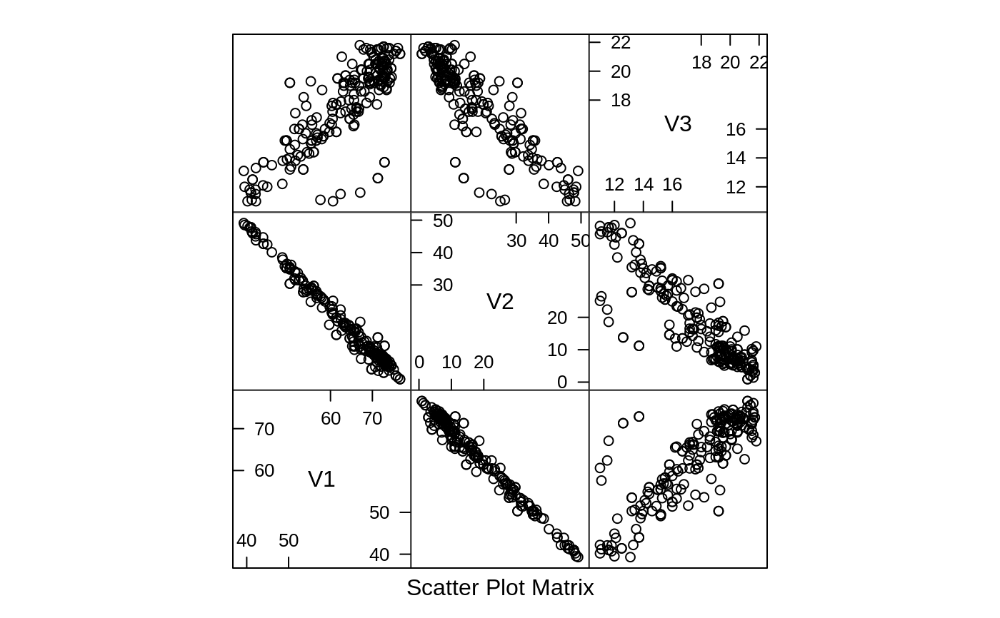
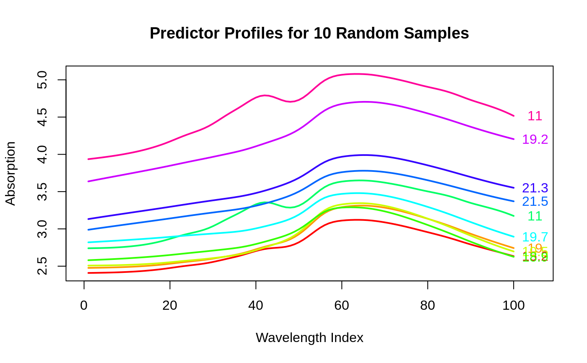

"These data are recorded on a Tecator Infratec Food and Feed Analyzer working in the wavelength range 850 - 1050 nm by the Near Infrared Transmission (NIT) principle. Each sample contains finely chopped pure meat with different moisture, fat and protein contents.
absorbance data for 215 samples. The first 129 were originally used as a training set
the percentages of water, fat and protein
If results from these data are used in a publication we want you to mention the instrument and company name (Tecator) in the publication. In addition, please send a preprint of your article to
Karin Thente, Tecator AB, Box 70, S-263 21 Hoganas, Sweden
The data are available in the public domain with no responsibility from the original data source. The data can be redistributed as long as this permission note is attached."
"For each meat sample the data consists of a 100 channel spectrum of absorbances and the contents of moisture (water), fat and protein. The absorbance is -log10 of the transmittance measured by the spectrometer. The three contents, measured in percent, are determined by analytic chemistry."
Included here are the traning, monitoring and test sets.
# plot 10 random spectra set.seed(1) inSubset <- sample(1:dim(endpoints)[1], 10) absorpSubset <- absorp[inSubset,] endpointSubset <- endpoints[inSubset, 3] newOrder <- order(absorpSubset[,1]) absorpSubset <- absorpSubset[newOrder,] endpointSubset <- endpointSubset[newOrder] plotColors <- rainbow(10) plot(absorpSubset[1,], type = "n", ylim = range(absorpSubset), xlim = c(0, 105), xlab = "Wavelength Index", ylab = "Absorption")for(i in 1:10) { points(absorpSubset[i,], type = "l", col = plotColors[i], lwd = 2) text(105, absorpSubset[i,100], endpointSubset[i], col = plotColors[i]) }title("Predictor Profiles for 10 Random Samples")